checK is an open-source web application for designing, configuring, and running controlled experiments on immersive Cultural Heritage environments.

What is checK?
checK is an open-source web application for authoring and running behavioural experiment in controlled immersive 3D Cultural Heritage environments. Designed for heritage practitioners, curators and behavioural scientists, it enables testers to define protocols and variables and monitors subjects' interaction in real time.
Based on a previous experiment-planner prototype by the same team, checK is built on the ATON Framework and integrates Interlumo services (Kapto and Merkhet) to capture and visualise immersive analytics.
User Flow
checK follows a natural experiment lifecycle: author, configure, onboard, run, and analyse.
Choose between two templates for simple explorations or more complex protocols.
Upload the enviroment and define the experimental protocol of the project.
Manage your sessions with a simple interface and onboard subjects with a single click.
Manage experimental variables and monitor subjects' behavior at each phase of the protocol.
Visualise logs and immersive analytics of each subject throughout your experiment.
Export all your experiment data as a *.csv file and get new insights with further analyses.
Get Started
checK requires Node.js and consists of:
The integration with Interlumo services relies on:They are all available as GitHub repositories and can be cloned within your main ATON instance.
The installation process is straightforward and can be completed in a few steps.
Once running, the tester dashboard is at
/a/checK
and the subject onboarding page at
/a/checK/welcome/
.
Clone the ATON framework and install its dependencies.
git clone https://github.com/phoenixbf/aton
npm install
Inside config/flares/, clone check-flare and the Merkhet plugin.
git clone https://github.com/cnr-ispc-dhilab-fi/check-flare
git clone https://github.com/phoenixbf/merkhet-plugin
Inside wapps/, clone the two web-applications.
git clone https://github.com/cnr-ispc-dhilab-fi/checK
git clone https://github.com/phoenixbf/merkhet-app
checK stores 3D models and scenes under dedicated sub-folders.
mkdir -p data/collections/check-user
mkdir -p data/scenes/check-user
Launch ATON with PM2 for persistent deployment, or use npm start for local testing.
npm run deploy-pm2
Acknowledgments
checK is developed by the Digital Heritage Innovation Lab at National Research Council - Institute of Heritage Science (DHILab - CNR ISPC) in Florence.
Realised with the support of the Laboratory of Experimental Museology (EPFL - eM+, Switzerland) and funding by the Swiss Government Excellence Scholarship (2025.0089), and with the collaboration of the Psychology departments of Sapienza University of Rome and University of Bologna.